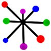

- Bring your privacy back home - where it belongs.
- Share your life with your friends and family - privately, securely.
- Join mistpark, the "dispersed" social network from Australia.
(You don't have to be an Aussie to distrust what your current social network might be doing with your private information...)